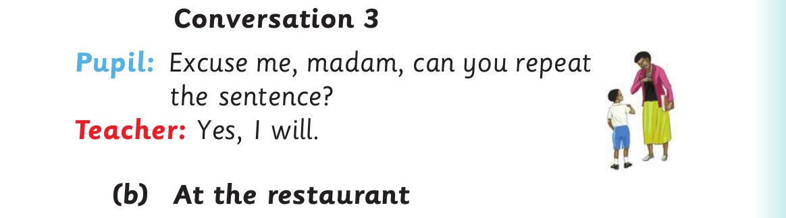

Polite requests - conversations continued
Asha : I am sorry, I am using it now.
Conversation 2
Haika : Could you please leave that seat for me? Mashaka: It is okay, just use it.

Conversation 3 Pupil: Excuse me, madam, can you repeat the sentence? Teacher: Yes, I will. (b) At the restaurant
Conversation 4
Customer: Excuse me; can I sit at this table? Waiter: Oh, sorry. It is reserved. You can use that one. Customer: Excuse me, can I get more sugar? Waiter: Oh sorry! It got finished. Somebody will bring it soon. Customer: Okay, I will wait.
(c) In a daladala Conversation 5
Passenger: Would you drop me at the next station?
Conductor: Sure.
Passenger A: Would you mind if I opened the window? Passenger B: Sorry. I am not comfortable with the blowing wind.